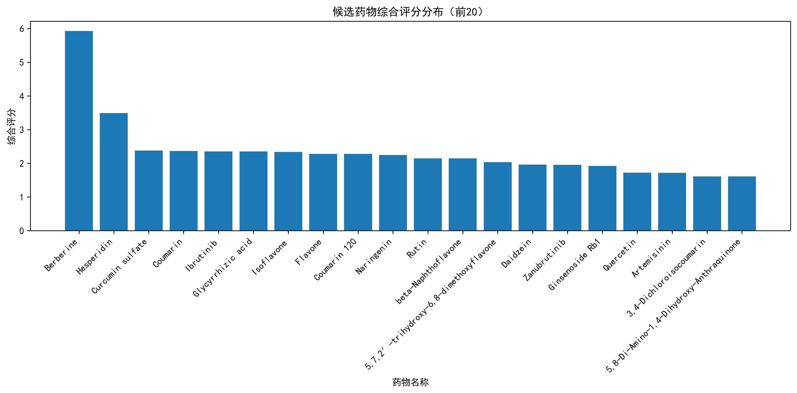
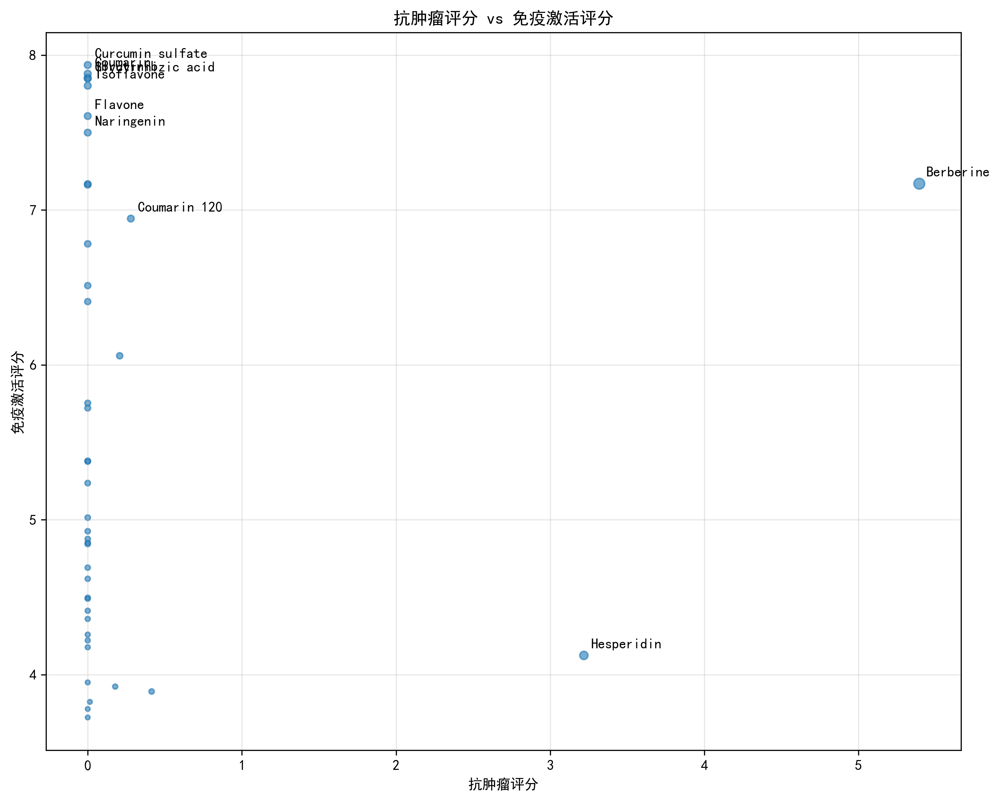

针对鼻咽癌（CNE1/CNE2）的中药来源成分筛选
共分析 41 个中药或天然产物
基于 16 个与鼻咽癌相关的疾病条目
筛选获得 41 个候选药物
| 排名 | 药物ID | 药物名称 | 抗肿瘤评分 | 免疫激活评分 | 综合评分 |
|---|---|---|---|---|---|
| 1 | DB04115 | Berberine | 5.3943 | 7.1696 | 5.9269 |
| 2 | DB04703 | Hesperidin | 3.2185 | 4.1239 | 3.4901 |
| 3 | DB14635 | Curcumin sulfate | 0.0000 | 7.9359 | 2.3808 |
| 4 | DB04665 | Coumarin | 0.0000 | 7.8798 | 2.3640 |
| 5 | DB09053 | Ibrutinib | 0.0000 | 7.8530 | 2.3559 |
| 6 | DB13751 | Glycyrrhizic acid | 0.0000 | 7.8480 | 2.3544 |
| 7 | DB12007 | Isoflavone | 0.0000 | 7.8022 | 2.3407 |
| 8 | DB07776 | Flavone | 0.0000 | 7.6065 | 2.2819 |
| 9 | DB08168 | Coumarin 120 | 0.2795 | 6.9443 | 2.2790 |
| 10 | DB03467 | Naringenin | 0.0000 | 7.4995 | 2.2499 |
| 11 | DB01698 | Rutin | 0.0000 | 7.1679 | 2.1504 |
| 12 | DB06732 | beta-Naphthoflavone | 0.0000 | 7.1627 | 2.1488 |
| 13 | DB13983 | 5,7,2′-trihydroxy-6,8-dimethoxyflavone | 0.0000 | 6.7813 | 2.0344 |
| 14 | DB13182 | Daidzein | 0.2073 | 6.0586 | 1.9627 |
| 15 | DB15035 | Zanubrutinib | 0.0000 | 6.5117 | 1.9535 |
| 16 | DB06749 | Ginsenoside Rb1 | 0.0000 | 6.4083 | 1.9225 |
| 17 | DB04216 | Quercetin | 0.0000 | 5.7531 | 1.7259 |
| 18 | DB13132 | Artemisinin | 0.0000 | 5.7209 | 1.7163 |
| 19 | DB04459 | 3,4-Dichloroisocoumarin | 0.0000 | 5.3799 | 1.6140 |
| 20 | DB03924 | 5,8-Di-Amino-1,4-Dihydroxy-Anthraquinone | 0.0000 | 5.3761 | 1.6128 |


1. 数据来源：txgnn_name_mapping.pkl 和 txgnn_prediction.pkl
2. 评分体系：